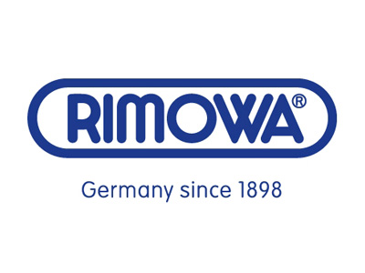

홈 > 브랜드 매거진 > 리모와
리모와
리모와(RIMOWA)는 1898년 파울 모르첵이 독일 쾰른에서 설립한 프리미엄 여행가방 브랜드다. 1937년 알루미늄 캐리어를 상용화했고 세로 그루브 디자인이 시그니처이며, 2016년 LVMH가 인수했다.
산업 분야 패션·럭셔리 · 공개 등급 자료 기반 · 브랜드 평가 4.3 ★


한눈에 보는 브랜드
리모와(RIMOWA)는 1898년 파울 모르첵이 독일 쾰른에서 설립한 프리미엄 여행가방 브랜드다. 1937년 알루미늄 캐리어를 상용화했고 세로 그루브 디자인이 시그니처이며, 2016년 LVMH가 인수했다.
브랜드 관점
리모와는 알루미늄 그루브 디자인을 시그니처로 한 럭셔리 트래블 기어로, LVMH 산하에서 포지셔닝한다. 헤리티지, 핵심 제품, 모회사 구조를 함께 보면 패션·럭셔리 안에서의 위치가 또렷해진다.
시작과 성장
1898년, 독일 쾰른에서 시작된 리모와(RIMOWA)는 여행 가방 브랜드이다. 100년이 넘는 역사 속에서 첨단 기술을 기반으로 한 수작업으로 최고의 품질을 추구하며 세계 최초로 슈트케이스에 알루미늄과 폴리카보네이트를 적용하였다.
브랜드 아이덴티티
리모와의 가족경영은 3대째 이어지고 있다. 시대에 따라 로고는 조금씩 변화했지만, 품질에 대한 일관된 철학은 변함없이 지켜나가고 있다.
월등한 기술력과 오래된 역사, 프리미엄 이미지를 바탕으로 다양한 브랜딩 활동을 진행하고 있다.
확장 지식
독일 쾰른에 기반하며 2016년 LVMH가 인수해 럭셔리 트래블 기어로 운영된다.
제품과 서비스
캐빈·체크인 캐리어를 중심으로 가방·액세서리를 전개한다. 알루미늄 Original과 폴리카보네이트 Essential 라인이 대표적이다.
사람들
창업자는 파울 모르첵(Paul Morszeck)이다. 사명 RIMOWA는 'RIchard MOrszeck WArenzeichen(상표)'에서 유래했다.
현재 상태
타임라인
BI/CI 변천사
함께 읽을 브랜드
 패션·럭셔리 · 자료 기반투미
패션·럭셔리 · 자료 기반투미투미(TUMI)는 1975년 찰리 클리퍼드가 미국에서 설립한 프리미엄 여행가방·비즈니스 백 브랜드다. 내구성 높은 발리스틱 나일론 소재로 알려졌으며, 2016년 쌤소...
 패션·럭셔리 · 자료 기반스와로브스키
패션·럭셔리 · 자료 기반스와로브스키스와로브스키(Swarovski)는 1895년 다니엘 스와로브스키가 오스트리아 바텐스에 설립한 크리스탈 제조·럭셔리 브랜드이다.
 패션·럭셔리 · 매거진 완성코치
패션·럭셔리 · 매거진 완성코치코치는 실용적 가죽 제품을 일상적 럭셔리의 영역으로 끌어올린 브랜드다. 과시적 명품보다 접근 가능한 품질과 라이프스타일 이미지를 통해 오래 쓰는 가방의 감각을 브랜드...
 패션·럭셔리 · 편집 검수캠퍼
패션·럭셔리 · 편집 검수캠퍼캠퍼(Camper)는 1975년 로렌소 플룩사가 스페인 마요르카에서 설립한 신발 브랜드다. 마요르카의 전통 제화 공예를 바탕으로 편안함과 개성 있는 디자인을 결합한...
 패션·럭셔리 · 편집 검수디젤
패션·럭셔리 · 편집 검수디젤디젤(Diesel)은 1978년 렌조 로소가 이탈리아 브레간체에서 설립한 데님 중심의 컨템포러리 패션 브랜드다. 도발적이고 실험적인 디자인으로 데님 헤리티지를 재해석...
 패션·럭셔리 · 편집 검수버버리
패션·럭셔리 · 편집 검수버버리버버리(Burberry)는 1856년 설립된 영국의 럭셔리 패션 하우스이다.
오메가(OMEGA)는 스위스 스와치 그룹 산하의 럭셔리 시계 제조 브랜드이다.
Au
Aurlands
패션·럭셔리 · 편집 검수AurlandsAurlands는 2019년에 기록된 Fashion 계열의 브랜드 아이덴티티 사례입니다. Heydays가 아이덴티티 작업의 디자이너로 기록되어 있습니다. 공개 섹션...